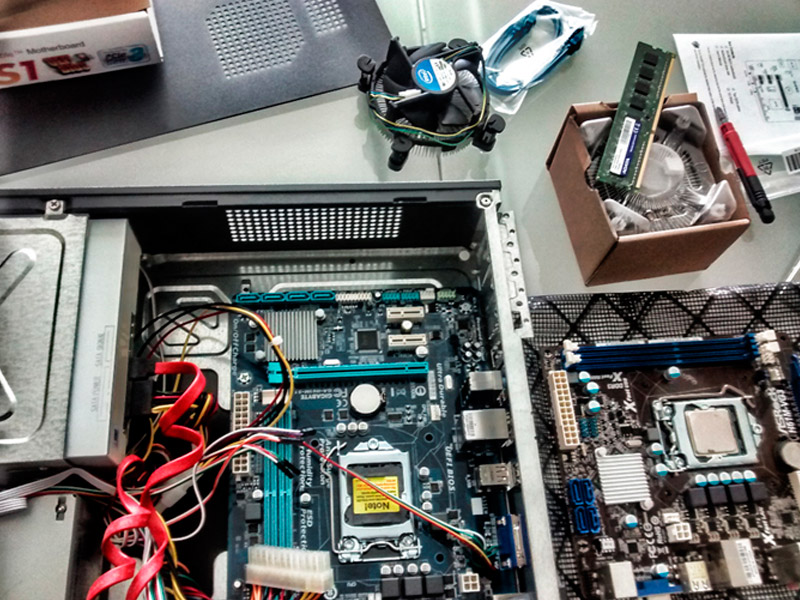

Antes de empezar con cualquier labor que se vaya a efectuar en la empresa se debera
llevar un
conteo
de cuantos productos se encuentran en la misma (siempre con la supervicion de un
personal de
la
misma. Deberemos separar las computadoras dañadas de las computadoras a las que se le
efectuara
simplemente un mantenimiento preventivo,
se debera tener un informe respecto a los fallos que presentan las mismas y un
interrogatorio al
cliente sobre como se llevo a cabo su uso.
Herramientas
Brocha.
Soplador.
Destornilladores (plano y de estrella).
Pulsera antiestática.
Cepillos.
Registro.
Mantenimiento correctivo
Dicho esto podemos pasar al mantenimiento, correctivo. Luego de un previo interrogatorio al personal
encargado sobre el estado actual del comnputador, deberemos solucionar dicha falla usando los
respuestos y piezas a nuestra dispocicion. Si por alguno motivo el personal de la comunidad
desconoce la causa del fallo sera nuestra obligacion darle un analisis profundo al dispositivo,
detectar la falla, que la origino y resolverla. Aquellos equipos los cuales no puedan ser reparados
se les extraeran los componentes en buen estado para su posterior uso como repuesto a los demas
equipos que lo precicen para alargar su vida.

Mantenimiento preventivo
A aquelllas computadoras que no presentan fallas se le aplicara un analisis para evitar futuras
amenazas,
le aplicaremos un soporte tecnico a su hardware mientras erradicamos exceso de polvo que provoque un
mal
funcionamineto del mismo. A su vez evaluaremos el estado de todos los componentes para que ninguno
de
estos presente un problema en un futuro cercano. Se eliminaran toda clase de virus o malware
malicioso
del equipo y se actualizaran tanto drivers como antivirus (El exceso de basura sera eliminada con la
finalidad de aumentar la velocidad del mismo.